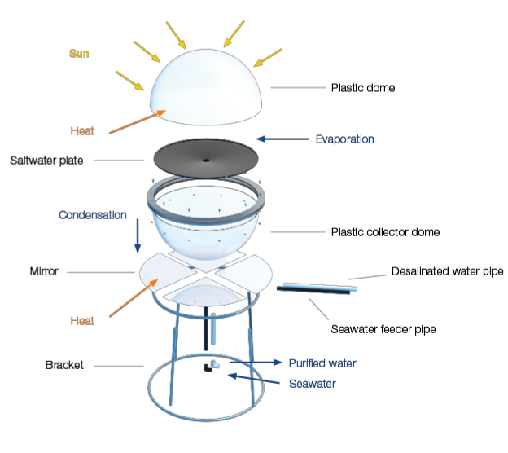

Design Overview.
Design
Our system is composed of five identical passive desalination modules that together form a scalable, off-grid water treatment array. Each module features a UV-resistant polycarbonate dome and a pre-filter screen to block sand and debris before seawater enters the evaporation chamber. Under direct sunlight with help of the mirrors, the water rapidly evaporates, then condenses on the cooler inner surface of the dome and drains into a stainless-steel trough for collection—no filters, pumps, or electricity required. The modules can be linked in parallel to increase daily output, and their simple, durable construction (polycarbonate + stainless steel) ensures minimal maintenance and a service life exceeding 30 years.

Key Design Features
Fully Passive Operation
The system works without electricity or moving parts, it runs entirely on sunlight.
Modular and Scalable
Multiple units can be combined to increase daily water output based on community size.
Durable and Low Maintenance
Built with UV-resistant polycarbonate and stainless steel for long-term use and minimal upkeep.
Solar Production Metrics
This is a theoretical analysis of how the system would perform under different solar conditions. Each desalination unit relies entirely on solar energy, converting sunlight into drinkable water through thermal evaporation and condensation. Under optimal conditions — approximately 5 to 6 kWh/m² of solar irradiance — a single unit is expected to produce up to 8 liters of distilled water per day. On overcast days or in low-radiation seasons, production may decrease to 4-6 liters. These calculations help estimate the system’s feasibility in tropical coastal climates like San Andrés and inform long-term water access planning.
Remineralization Process
The desalination process removes not only harmful substances but also essential minerals naturally present in drinking water. As a result, the distilled output lacks electrolytes such as calcium, magnesium, and potassium, which are important for human health and contribute to water taste and balance. To address this, the proposal includes a remineralization step using commercially available mineral concentrate drops. These drops are added manually at a recommended dose of 1 mL per liter, restoring basic mineral content and helping maintain a neutral to slightly alkaline pH (7.0-8.5). This method is low-cost, easy to apply at the household level, and complies with the parameters established by Colombian Resolution 2115 of 2007, which regulates the quality of water for human consumption.